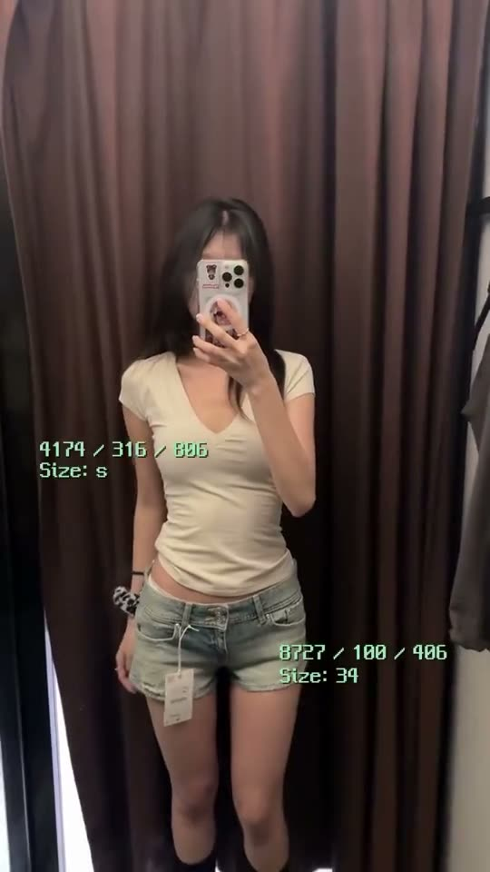
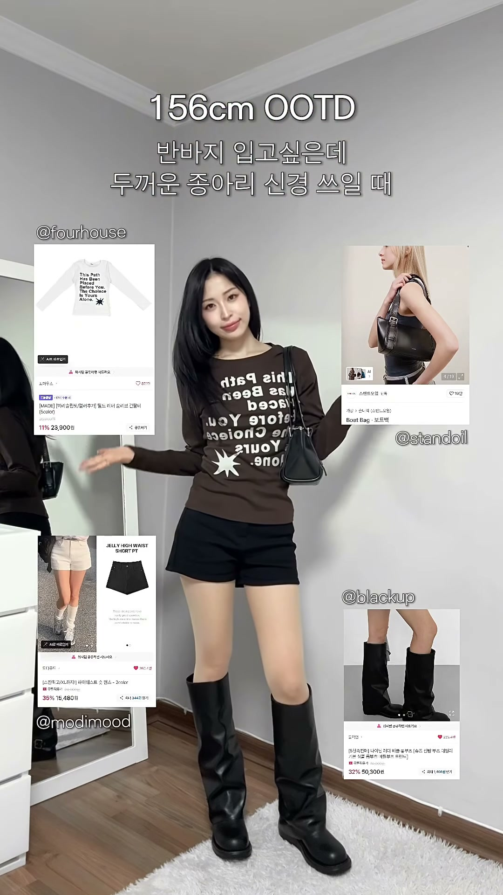

거울 가까이 큰 타이틀
거울에 바짝 붙어 가운데 큰 세 줄 타이틀로 열어요. 이번엔 “착한구두 / 가을 부츠 / 추천👢”로 바꿔요.
인플루언서 · 순서와 장면은 같이 정해요
필수 컷 확보 → 예시 선택 → 촬영안 합의 → 촬영·검수
아래 부츠 한 켤레로 촬영해요. 예빈님 “ZARA 여름 옷추천” 영상처럼 거울 셀카로 가요. 거울 가까이 큰 타이틀로 열고 → 거울 앞에서 장점을 한 줄씩 → 전신에 제품명·사이즈 자막 → 댓글로 말 걸며 닫아요. 이번엔 옷 대신 무비 부츠가 주인공이라, 부츠가 발끝까지 들어오게 찍어요. 순서와 장면은 같이 정해요.
코코아 색상 230 사이즈로 보내 드려요. 팔로워 할인코드는 yachi2610(20% 할인)예요. 영상 끝 구매 안내 자막과 댓글 DM에 넣어 주세요.
사진을 누르면 공식 상품 상세로 이동해요. 모바일에서는 옆으로 넘겨 볼 수 있어요.
업로드는 부츠를 받으신 뒤 2주 안, 11월 초~중순이에요. 업로드 전에 영상을 먼저 보여 주세요.
원본은 ZARA 여름 옷추천 ↗이고, LOOK 번호로 코디를 넘기는 건 My 3 Fall Outfits ↗를 참고했어요.
거울에 바짝 붙어 가운데 큰 세 줄 타이틀로 열어요. 이번엔 “착한구두 / 가을 부츠 / 추천👢”로 바꿔요.

촬영 구도 · 원본 3~6초휴대폰으로 얼굴을 가린 거울 셀카 전신이에요. 원본은 무릎 아래가 잘리니 한 걸음 물러나 부츠 끝까지 담아요.
전신 → 거울 가까이 → 다시 전신으로 오가며 장점을 한 줄씩 붙여요. 원본의 갈색 이야기가 이번 코코아 색 자리예요.
원본처럼 작은 초록 픽셀 자막에 짧은 반말로 가요. 예: “스웨이드 재질 너무 쫀쫀😊”, “주름은 알아서 잡힘”, “다들 착한구두로 달려갓”
사진은 예빈님 원본 장면이에요. 이번 부츠로 같은 구도를 찍어요.
거울 가까이 타이틀로 열고, 바로 부츠까지 보이는 전신 컷으로 넘어가요.
자막·안내
“착한구두 / 가을 부츠 / 추천👢”
카메라를 부츠 쪽으로 내려 색·소재·주름·굽을 한 줄씩 보여줘요. 이어서 전신에 제품명·사이즈를 얹어요.
자막·안내
“붉은기 없는 코코아라” · “스웨이드 주름 알아서 잡힘” · “통굽 7.5cm”
“무비 슬라우치 부츠 / 코코아 · 230”
거울 앞에서 댓글로 말을 걸고, 구매 안내 자막으로 닫아요.
자막·안내
무비 슬라우치 부츠 · 할인코드 yachi2610(20%) · 댓글 키워드 자동 DM
첫 장면과 구매 안내는 앞·끝에 두고, 중간 순서와 장면은 함께 정해요. 아래 조합은 출발안이며 합의 전 확정안은 아니에요. 조회수는 원본 전체 영상의 수치로, 개별 컷의 전환 효과를 뜻하지 않아요. 예시 속 제품·숫자·가격은 이번 조건으로 바꿔요.
원본처럼 거울 가까이에서 가운데 큰 세 줄 타이틀로 열어요. 예: “착한구두 / 가을 부츠 / 추천👢”. 0~2초 안에 전신 컷으로 넘어가서 부츠가 바로 보이게 해요.
랭킹 캡처 활용 요청
아래 랭킹 캡처를 브랜드 소개 장면에 넣어 주세요. “무신사 1위 부츠를 만든 착한구두에서, 저는 이 부츠를 골랐어요.”처럼 자연스럽게 이어 주시면 좋겠어요. 삽입 위치와 길이는 자유롭게 정해 주세요.
플랫폼명·카테고리·1위 표시·착한구두 상품명이 함께 보이도록 잘라 주세요. 무신사 캡처는 페탈 부츠의 부츠/워커 상품 순위, 지그재그 캡처는 착한구두 스니커즈의 상품 순위예요. 브랜드 순위가 아니라 착한구두의 상품 1위 이력으로 보여 주세요.
각 캡처에 표시된 시점·카테고리의 순위예요.
착장 영상 위에 상품 페이지 캡처를 배치한 예시예요. 랭킹 인증 사례는 아니고, 이미지를 영상 위에 올리는 방식만 참고해 주세요. 크기·위치·노출 시간은 예빈님 스타일대로 정하시면 돼요.

원본의 “갈색도 있는데 → 붉은기 아예 없는 갈색이라 → 쿨톤에게도 딱일듯!!”처럼 장점을 한 줄씩 이어 붙여요. 이번엔 카메라를 부츠 쪽으로 내려 코코아 색·스웨이드·슬라우치 주름·통굽 7.5cm를 하나씩 보여줘요.
원본처럼 거울 전신에 작은 픽셀 자막으로 제품 정보를 얹어요. 예: “무비 슬라우치 부츠 / 코코아 · 230”. 한 걸음 물러나 부츠 끝까지 담고, 코디 2~3벌을 LOOK 1·2·3으로 넘겨요.
원본 마지막 “뭐 샀을지 댓글로 맞춰보세요”처럼 말을 걸고, 구매 안내로 닫아요. 댓글 키워드를 남기면 자동 DM으로 링크와 할인코드 yachi2610(20%)가 가요.
광고로 썼을 때 반응이 가장 좋았던 구도예요. 영상 중간이나 끝에 2~3초만 넣어 주시고, 이 컷은 자막·음악 없는 원본으로도 따로 보내 주세요. 둘 중 하나면 충분해요. 아래 영상은 다른 제품으로 찍은 광고 장면이라 구도만 참고해 주세요.
이번 영상에서 어떤 장면에 반응이 좋았는지 함께 살펴보고, 다음 협업에서는 더 좋은 영상을 만들어가고 싶어요. 업로드 후 시청 지표를 인사이트 화면 캡처로 공유해 주시면 큰 도움이 됩니다.
함께 살펴볼 지표
시청 유지 그래프 · 평균 시청 시간 · 완료율 · 유입 경로
부츠를 촬영할 때 선택해서 참고해 주세요. 마음에 드는 구도만 활용하고, 촬영 장면과 구성은 자유롭게 정해 주세요.
아래는 다른 제품의 촬영 예시이며, 이번에 소개할 제품 사진이 아닙니다.